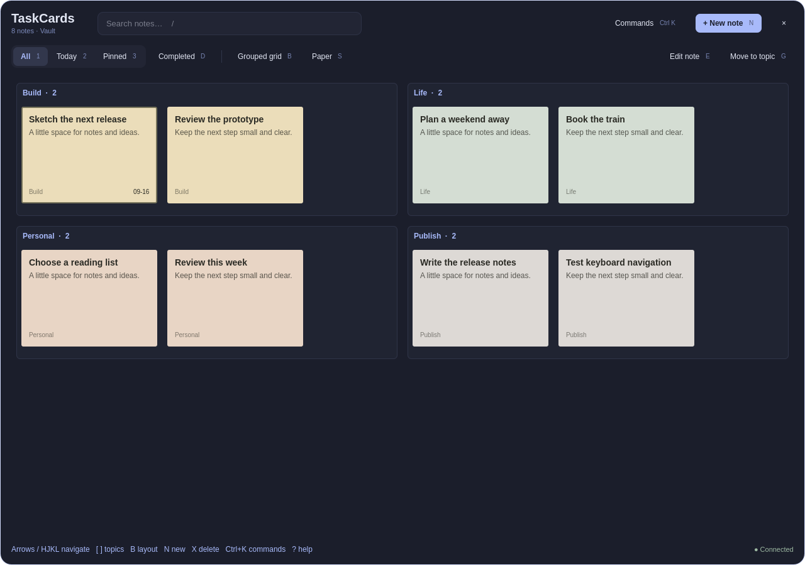

TaskCards
Sticky notes that remember where things are — keyboard-first boards over Obsidian TaskNotes, on Omarchy.


01The problem
Task lists flatten everything. In a to-do app, every task is one row in one long column, and position carries no meaning — the third item this morning is the third item tonight only by accident of sorting. That throws away the way people actually manage visible work. Pin notes to a wall and you stop remembering what you wrote and start remembering where it is: top-left is the launch, the cluster near the door is the errands. Spatial memory is a real cognitive tool, and almost every digital task system discards it in favor of the search box.
The second half of the problem is capture. A thought is worth about ten seconds. If writing it down means alt-tabbing, opening an app, finding the right list, and clicking a button, the thought evaporates first.
02The approach
TaskCards puts sticky notes back on the wall — the desktop wall. It runs as an overlay on Omarchy, the Arch-based distribution built around the Hyprland compositor and Quickshell, the framework for writing desktop widgets in QML. The boards sit above the workspace, always visible, never a window you have to raise. Tasks come from Obsidian TaskNotes, a plugin whose central bet is that a task is just a Markdown note: a file with YAML frontmatter carrying title, status, priority, due, and project links, and a freeform body underneath. TaskCards reads those plain-text files and renders them as cards you arrange into topic layouts — a board per subject, positioned once, recognized at a glance thereafter. Capture is a keystroke: a card appears, you type, it's in the vault. Three skins keep the wall your taste, not the framework's.
03Trade-offs
04Under the hood
The architecture keeps three concerns cleanly apart. The vault is data: TaskNotes Markdown files with YAML frontmatter, watched for changes so edits made in Obsidian appear on the wall without a restart. The board is layout: card positions and topic groupings persist separately from the task data, so arranging your wall never rewrites your notes, and a note edited in Obsidian never jumps off the wall. The overlay is presentation: a Quickshell QML layer drawn over Hyprland's workspaces, with keyboard bindings for capture, focus, and status changes, and three interchangeable skins swapping the card styling wholesale. It's a small, deliberate stack — plain text in, spatial memory out — built for the way one person actually thinks.